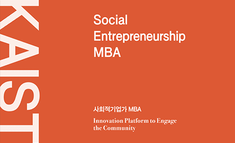

SI Education
교육 과정
미래의 사회혁신 인재 육성을 선도하는 국내∙외 대학, 교육과정을 소개합니다.
- 대학 KAIST 경영대학
- 과정명 사회적기업가(SE) MBA
- 과정특징 사회적기업 창업가 양성
- 학생 Career SE 창업가

과정소개
KAIST 사회적기업가(SE) MBA는 KAIST 경영대학과 SK그룹이 협력해 2013년 신설한 2년 전일제 프로그램으로 사람과 사회에 대한 관심과 열정을 바탕으로 혁신적 가치를 창출합니다.
국내 최초이자 최대 규모 MBA의 교육 노하우 및 동문 네트워크를 자랑하는 KAIST SE MBA는 사회적기업의 이론과 실제가 결합된 커리큘럼을 제공하여 사회적기업 관련 전문 역량을 축적할 수 있도록 돕고, 창업단계별 맞춤 창업 멘토링과 Shared Service, 임팩트 투자 유치 협력을 통해 학생들이 지속가능한 소셜 벤처 경영을 이어나갈 수 있도록 지원합니다.
국내 최초이자 최대 규모 MBA의 교육 노하우 및 동문 네트워크를 자랑하는 KAIST SE MBA는 사회적기업의 이론과 실제가 결합된 커리큘럼을 제공하여 사회적기업 관련 전문 역량을 축적할 수 있도록 돕고, 창업단계별 맞춤 창업 멘토링과 Shared Service, 임팩트 투자 유치 협력을 통해 학생들이 지속가능한 소셜 벤처 경영을 이어나갈 수 있도록 지원합니다.